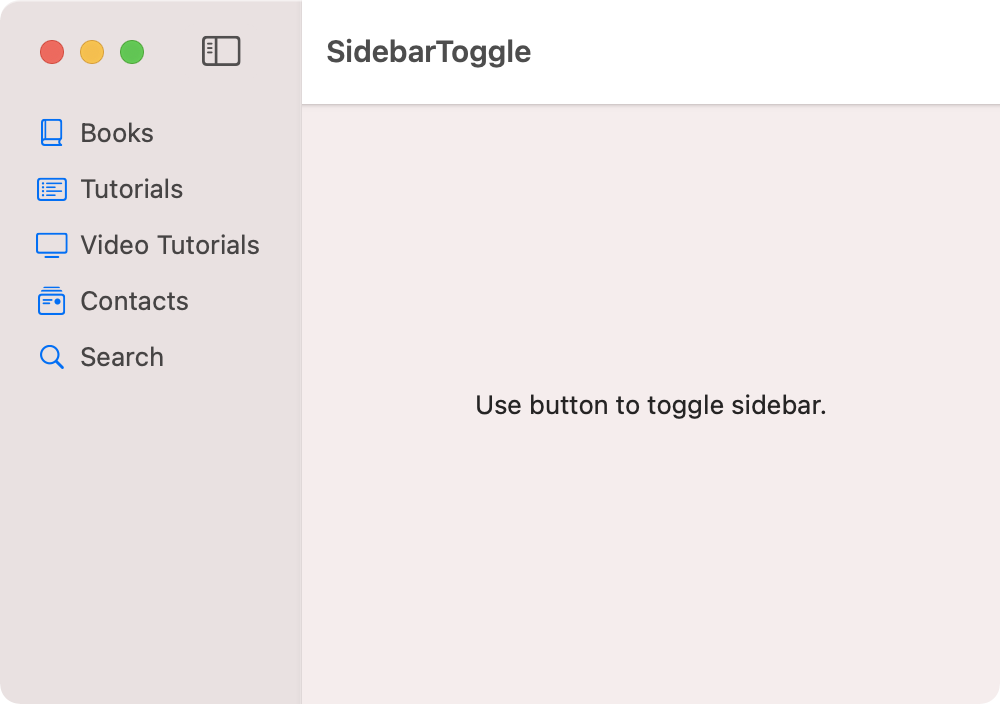

A sidebar view can be displayed or hidden using the toggleSidebar() feature from an NSSplitViewController. At the time of writing this article, SwiftUI does not have this feature but hopefully an upcoming WWDC will offer a SwiftUI solution.

import SwiftUI
struct Sidebar: View {
var body: some View {
List {
Label("Books", systemImage: "book.closed")
Label("Tutorials", systemImage: "list.bullet.rectangle")
Label("Video Tutorials", systemImage: "tv")
Label("Contacts", systemImage: "mail.stack")
Label("Search", systemImage: "magnifyingglass")
}
.listStyle(SidebarListStyle())
.toolbar {
Button(action: toggleSidebar, label: {
Image(systemName: "sidebar.left").help("Toggle Sidebar")
})
}
.frame(minWidth: 150)
}
}
private func toggleSidebar() {
NSApp.keyWindow?.contentViewController?.tryToPerform(#selector(NSSplitViewController.toggleSidebar(_:)), with: nil)
}
struct ContentView: View {
var body: some View {
NavigationView {
Sidebar()
Text("Use button to toggle sidebar.")
.frame(minWidth: 200)
}
.frame(width: 500, height: 300)
}
}
The sidebar view can also be toggled with a keyboard shortcut using Option-Command-S represented by the symbols ⌥⌘S. This is enabled by adding SidebarCommands() to the main window group.
import SwiftUI
@main
struct SidebarToggleApp: App {
var body: some Scene {
WindowGroup {
ContentView()
}
.commands {
SidebarCommands()
}
}
}
Gavin Wiggins © 2024